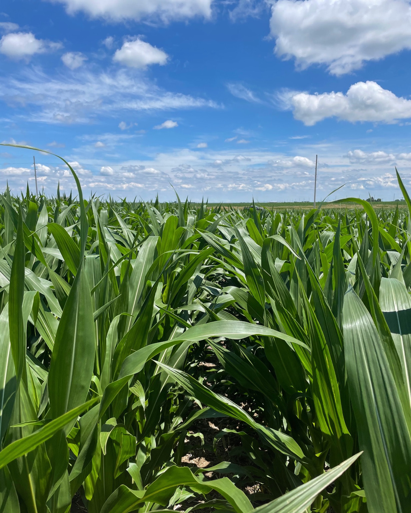
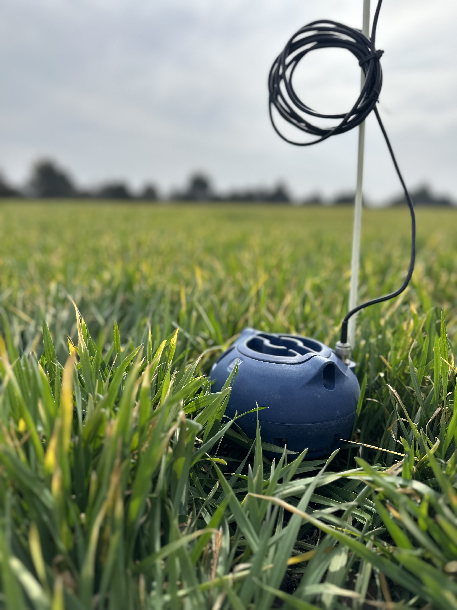

Know your soil. Manage your water.
We install and manage soil moisture probes and on-farm weather stations for Nebraska farmers. Real-time data so you can stop guessing.

Monitoring and data management for your operation.
We handle installation, monitoring, maintenance, and data interpretation — so you get answers, not another thing to manage.
Soil Moisture Probes
Multi-depth CropX probes, professionally installed and fully managed. Real-time soil moisture data streamed directly to your phone all season.
Weather Stations
On-farm weather data: temperature, humidity, wind, rainfall, and solar radiation for precision irrigation scheduling.
Getting started is simple.
From first conversation to live data — here's what the process looks like.
Learn
We learn your fields, your soil types, your irrigation setup, and your goals.
Install
Professional probe and/or weather station placement — where they'll matter most.
Monitor
Real-time data to your phone. We watch it too, and flag what needs attention.
Optimize
Data-driven irrigation timing, records, and season planning — year after year.
Ready to see what's below the surface?
Whether you're starting with one probe or outfitting a full section — let's talk.
Monitoring and data management for your operation.
We handle installation, monitoring, maintenance, and data interpretation — so you get answers, not another thing to manage.
Soil Moisture Probes
Multi-depth CropX probes, professionally installed and fully managed. Real-time soil moisture data streamed directly to your phone all season.
Weather Stations
On-farm weather data: temperature, humidity, wind, rainfall, and solar radiation for precision irrigation scheduling.
Getting started is simple.
From first conversation to live data — here's what the process looks like.
Learn
We learn your fields, your soil types, your irrigation setup, and your goals.
Install
Professional probe and/or weather station placement — where they'll matter most.
Monitor
Real-time data to your phone. We watch it too, and flag what needs attention.
Optimize
Data-driven irrigation timing, records, and season planning — year after year.
Service Area
We serve farm operations across south-central Nebraska.
Approved for NRCS funding? We can provide the hardware and services.
If your operation has been approved through EQIP or CSP for soil moisture monitoring or irrigation water management, we have the equipment and services to meet those requirements.
Environmental Quality Incentives Program
Our soil moisture probes and installation services meet EQIP practice standards for irrigation water management. We also provide end-of-season reporting to help fulfill your contract documentation.
Conservation Stewardship Program
Soil moisture monitoring and advanced IWM are eligible CSP enhancements. Our services fit right into those contracts, including the seasonal reporting your commitment requires.
Custom apps, built in-house.
Simple, reliable tools built for the way farmers actually work. Have an idea? Let's talk
About
I'm passionate about making ag technology accessible to farmers — not just installing equipment, but making sure the data actually gets used. I want to be on the cutting edge of water management, and I love working with growers to get the maximum yield out of every drop of water.
Ready to see what's below the surface?
Whether you're starting with one probe or outfitting a full section — let's build a monitoring plan that fits your operation.
Get in touch